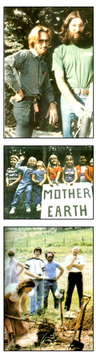

Ned Ryan Doyle
From top to bottom: Beach Barrett (left) and the author (right) with a home-built, solarpowered, vacuum ethanol column (San Diego, California, 1982); A wee generation of Mother Earthers; Visitors to MOTHER's Eco-Village benefit from hansom, Show-How workshops (1982).